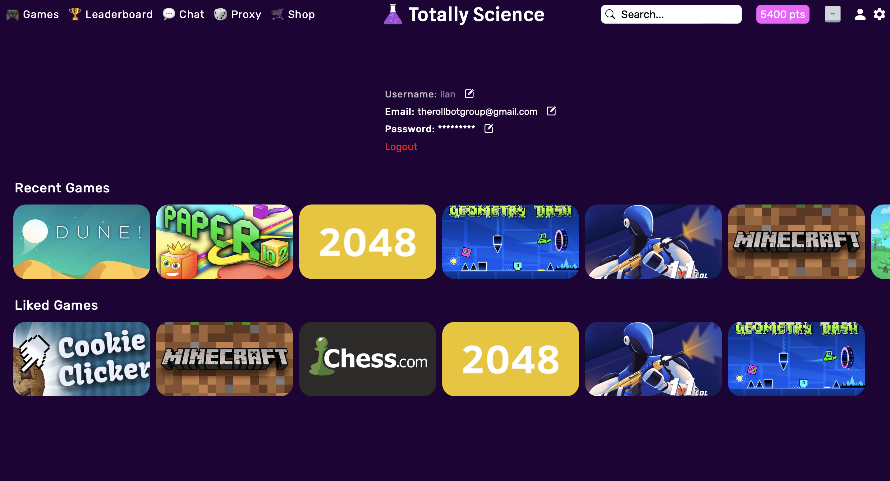
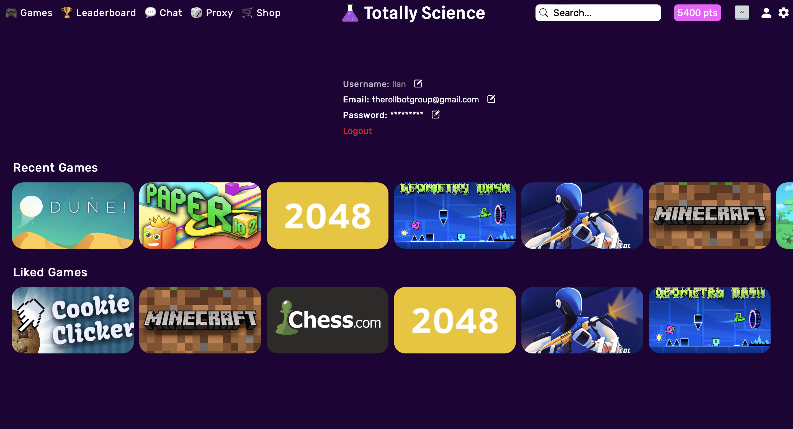

I am a passionate teen programmer and entrepreneur. I have been programming since I was 10 and working with technology since much younger. I have built PCs for myself as well as a family member and friend. I am interested in finance and investing and have been actively following and investing in stocks for a few years now.
The programming languages and technologies I have worked with most frequently are:
Javascript (both Node JS and frontend)
mySQL
HTML and CSS
C# (inside and outside of Unity)
PHP
Cloudflare, Github
I also have some experience with:
Golang
Python
Java
Postgres SQL with Prisma
Solid JS
You can contact me however is most convenient to you.
Totally Science is an unblocked games website that offers everything from Minecraft to Monkey Mart. We also have a proxy that allows you to unblock and use any website you desire: Youtube, Tik Tok, Discord, etc. Totally Science was founded in 2021 and started growing rapidly in January of 2022. We have hundreds of free to play games. Every month over 250 thousand gamers from all over the world play their favorite games on Totally Science.
I am currently serving the position of CTO of Totally Science. My work consists of developing and maintaining our Node JS based backend as well as making improvements to the performance and usability of our frontend.
Flash Study is a website with tools for preparing for assessments. It has free tools for memorization including flashcards and our questions features. The questions features is similar to quizlet learn in that it quizzes you. There is also an experimental note sharing feature.
Flash Study is currently under development. The site may have bugs and/or incomplete features. I am currently developing this solo as a side project. I have found it useful when preparing for my foreign language exams
Efficiency Lists is a simple to-do list website. It includes the ability to add, remove, and edit items with convenient keybinds. You can also categorize the items into topics for further organization.
 
